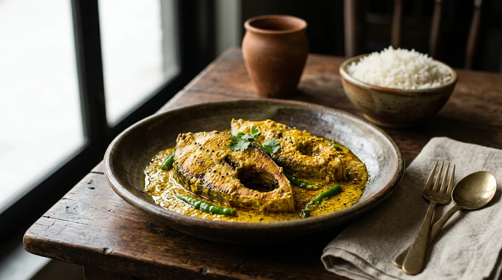

OUR HERITAGE, ON A PLATE.THE SOUL OF MATI
Some flavours
bring you home.
শিকড়ের টানে, স্বাদের সন্ধানে।
Mati means earth. And that’s where our story begins—with the land, the seasons, and the recipes passed from one generation to the next.
From the fragrant kitchens of Old Dhaka to the mustard fields of Bengal, our table celebrates the food we grew up loving. Honest ingredients. Unhurried cooking. A generous heart.
মাটি
ROOTED IN TRADITION.
MADE FOR TODAY.